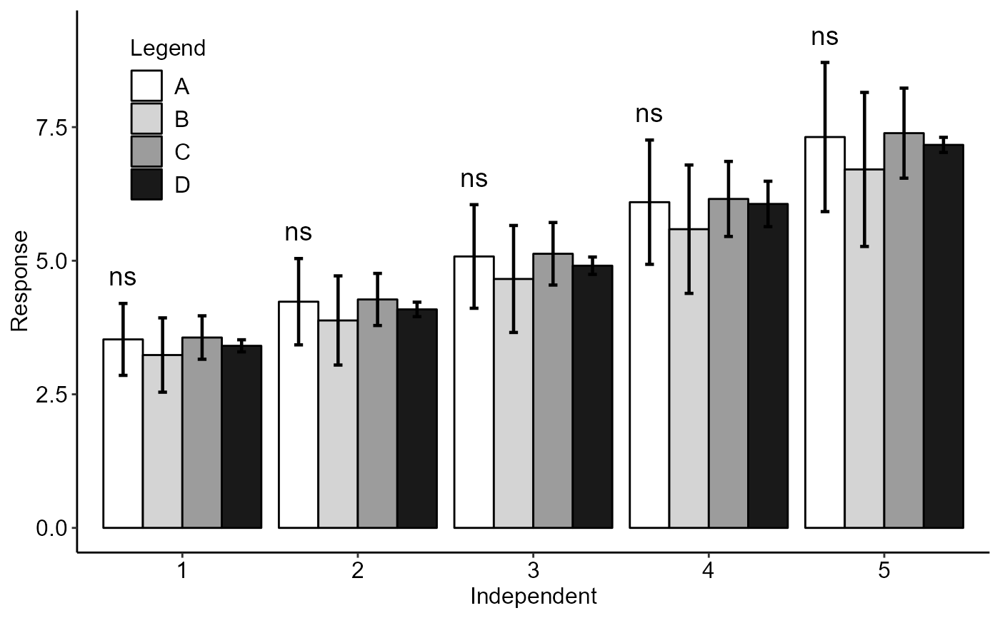

DQLT.RdFunction of the AgroR package for the analysis of experiments conducted in a balanced qualitative single-square Latin design with multiple assessments over time, however without considering time as a factor.
DQLT(
trat,
line,
column,
time,
response,
alpha.f = 0.05,
alpha.t = 0.05,
mcomp = "tukey",
error = TRUE,
xlab = "Independent",
ylab = "Response",
textsize = 12,
labelsize = 5,
pointsize = 4.5,
family = "sans",
sup = 0,
addmean = FALSE,
posi = c(0.1, 0.8),
geom = "bar",
fill = "gray",
legend = "Legend",
ylim = NA,
width.bar = 0.2,
size.bar = 0.8,
dec = 3,
theme = theme_classic(),
xnumeric = FALSE,
all.letters = FALSE
)Numerical or complex vector with treatments
Numerical or complex vector with line
Numerical or complex vector with column
Numerical or complex vector with times
Numerical vector containing the response of the experiment.
Level of significance of the F test (default is 0.05)
Significance level of the multiple comparison test (default is 0.05)
Multiple comparison test (Tukey (default), LSD, Scott-Knott and Duncan)
Add error bar (SD)
Treatments name (Accepts the expression() function)
Variable response name (Accepts the expression() function)
Font size of the texts and titles of the axes
Font size of the labels
Point size
Font family
Number of units above the standard deviation or average bar on the graph
Plot the average value on the graph (default is TRUE)
Legend position
Graph type (columns - "bar" or segments "point")
Defines chart color (to generate different colors for different treatments, define fill = "trat")
Legend title
Define a numerical sequence referring to the y scale. You can use a vector or the `seq` command.
width error bar
size error bar
Number of cells
ggplot2 theme (default is theme_classic())
Declare x as numeric (default is FALSE)
Adds all label letters regardless of whether it is significant or not.
The function returns the p-value of Anova, the assumptions of normality of errors, homogeneity of variances and independence of errors, multiple comparison test, as well as a line graph
The p-value of the analysis of variance, the normality test for Shapiro-Wilk errors, the Bartlett homogeneity test of variances, the independence of Durbin-Watson errors and the multiple comparison test ( Tukey, Scott-Knott, LSD or Duncan).
The ordering of the graph is according to the sequence in which the factor levels are arranged in the data sheet. The bars of the column and segment graphs are standard deviation.
Principles and procedures of statistics a biometrical approach Steel, Torry and Dickey. Third Edition 1997
Multiple comparisons theory and methods. Departament of statistics the Ohio State University. USA, 1996. Jason C. Hsu. Chapman Hall/CRC.
Practical Nonparametrics Statistics. W.J. Conover, 1999
Ramalho M.A.P., Ferreira D.F., Oliveira A.C. 2000. Experimentacao em Genetica e Melhoramento de Plantas. Editora UFLA.
Scott R.J., Knott M. 1974. A cluster analysis method for grouping mans in the analysis of variance. Biometrics, 30, 507-512.
rm(list=ls())
data(simulate3)
attach(simulate3)
#> The following objects are masked from simulate1:
#>
#> resp, tempo, trat
#> The following objects are masked from aristolochia (pos = 4):
#>
#> resp, trat
#> The following objects are masked from simulate2:
#>
#> resp, tempo, trat
#> The following objects are masked from laranja:
#>
#> resp, trat
#> The following objects are masked from aristolochia (pos = 7):
#>
#> resp, trat
#> The following object is masked from cloro:
#>
#> resp
#> The following object is masked from passiflora:
#>
#> trat
DQLT(trat, linhas, colunas, tempo, resp)
#>
#> -----------------------------------------------------------------
#> ANOVA and assumptions
#> -----------------------------------------------------------------
#> p-value ANOVA Shapiro-Wilk Bartlett Durbin-Watson CV (%)
#> 1 0.8315413 0.1585848 0.7511662 0.2932159 15.99516
#> 2 0.8315413 0.1585848 0.7511662 0.2932159 15.99516
#> 3 0.8315413 0.1585848 0.7511662 0.2932159 15.99516
#> 4 0.8211590 0.1062631 0.8433703 0.2928187 15.81922
#> 5 0.8656823 0.1087673 0.7100666 0.2383646 17.44844
